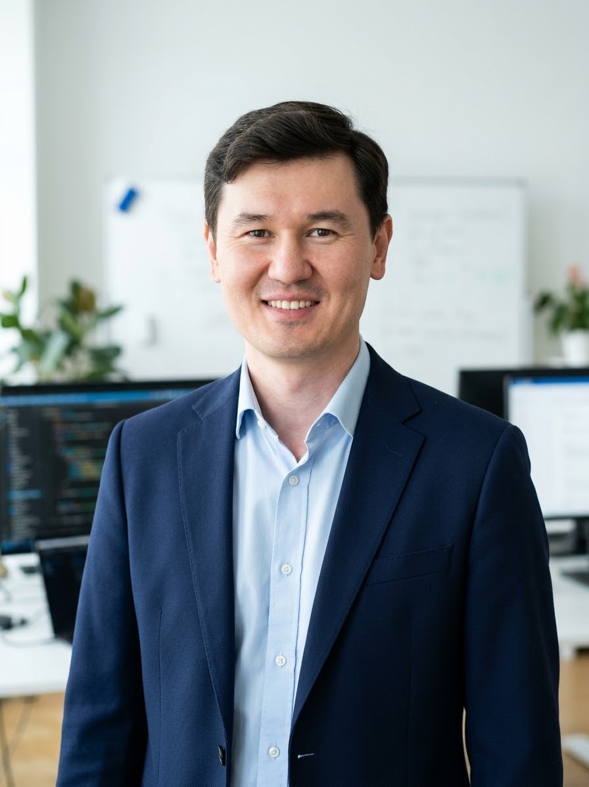

Пятидневная программа для специалистов KEGOC: архитектура корпоративных сетей, маршрутизация, коммутация, безопасность, Wireless, SD-WAN, Cisco DNA Center и сетевой automation.
Курс выстроен вокруг практических технологий Cisco Enterprise Network: от campus switching и routing до безопасности, автоматизации и API-интеграций.
Занятия в учебном классе с лекционными материалами, лабораторным пространством и прямой работой с инструктором.
Небольшая группа позволяет уделить внимание уровню каждого участника и разобрать реальные инженерные вопросы.
По итогам курса слушатели получают материалы, выполненные лабораторные задания и сертификат о прохождении обучения.
Программа охватывает основные технологические домены Cisco Enterprise Network и помогает участникам соединить архитектурное понимание с практической настройкой и troubleshooting.
Темы распределены так, чтобы участники сначала укрепили фундамент, затем перешли к enterprise services, безопасности и современным подходам Cisco DNA Center, SD-Access, SD-WAN и API.
Лабораторный блок закрывает ключевые инженерные сценарии: диагностика, конфигурация, проверка, troubleshooting и автоматизация.
Программа сгруппирована по доменам, чтобы заказчику было ясно видно соответствие требованиям и практическая ценность каждого блока.
Опыт преподавателя сочетает enterprise networking, Cisco automation, сетевые API и практику работы с крупными международными сетевыми средами.

Network Test Automation Engineer · Cisco / BT enterprise background · Python, Ansible, Robot Framework, Cisco NSO, NETCONF/RESTCONF.
Специалист по сетевой автоматизации и тестированию с опытом более 5 лет в network automation, software testing и backend engineering. Работал в Cisco Systems и British Telecom, автоматизировал тестирование крупных сетевых решений, интегрировал RESTCONF/NETCONF API с тестовыми фреймворками и развивал CI/CD-подходы для проверки сетевых конфигураций.
Участник может заранее оставить данные, уровень подготовки, ожидания и вопросы. Форма помогает заранее определить технический уровень, ожидания и приоритетные темы участников.
Предварительная информация помогает сделать обучение более прикладным, сфокусированным и полезным для инженерной команды.
Участник может указать текущий опыт, рабочие задачи, интересующие темы и вопросы, которые желательно разобрать во время курса.
Итог программы ориентирован на практическое применение знаний в корпоративной сетевой инфраструктуре: от конфигурации до анализа, безопасности и автоматизации.
Цель программы: дать инженерной команде структурированное понимание ключевых технологий Cisco Enterprise Network и практические навыки настройки, анализа, troubleshooting и автоматизации.